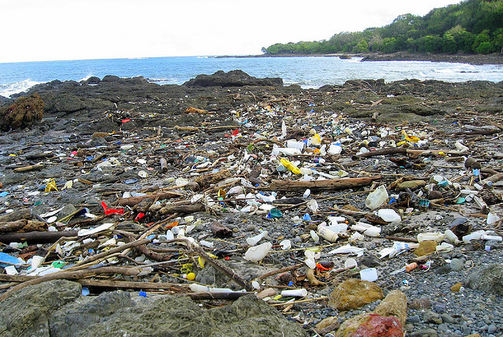
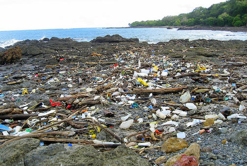

PROBLEMS:
We are constantly destroying nature when we litter or dump trash
everywhere, the picture on the left represents land that people respect
unlike the right, representing how people everywhere are just dumping
trash and sewage anywhere.
We should respect the enviornment more.We should stop littering and
start taking care of the world we live in. The animals on land and in
the ocean are being severly injured due to littering.
SOLUTIONS
There are MANY MANY possible solutions for these types of problems, one
of them being, stop the problem from where it started, people not
throwing away trash and littering.So we can add more public trashcans,
if we increase the ammount of trashcans, more poeple will throw away
their trash.Another way is to increase recycling by adding more recycle
bins, doing this will increase the ammount of things we can make
reusing things, and it will decrease the ammount of trash that goes to
the dump, so it's a win win!
WHY WE SHOULD HELP PROTECT NATURE:
Nature is one of the key elements of keeping our whole earth from
becoming a huge poluted planet factory. Nature (mostly plants and
trees) help us SURVIVE using drum roll please . . . PHOTOSYNTHESIS.
It's as if, plants in-hale the carbon dioxide, then ex-hale the oxygen,
as humans in-hale oxygen and ex-hale carbon dioxide.nature considers
us, so we need to consider nature.
 
